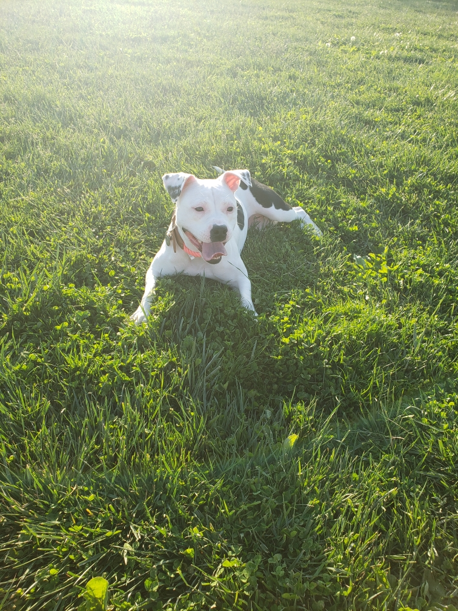
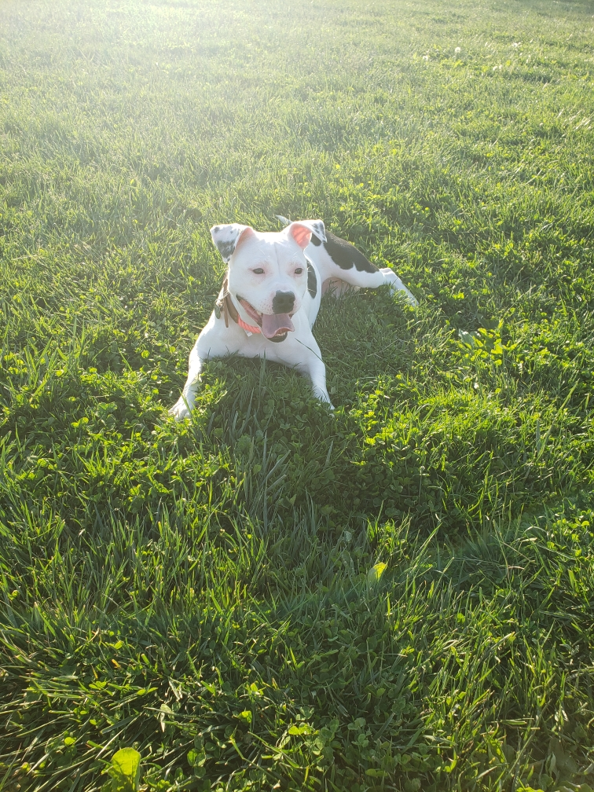
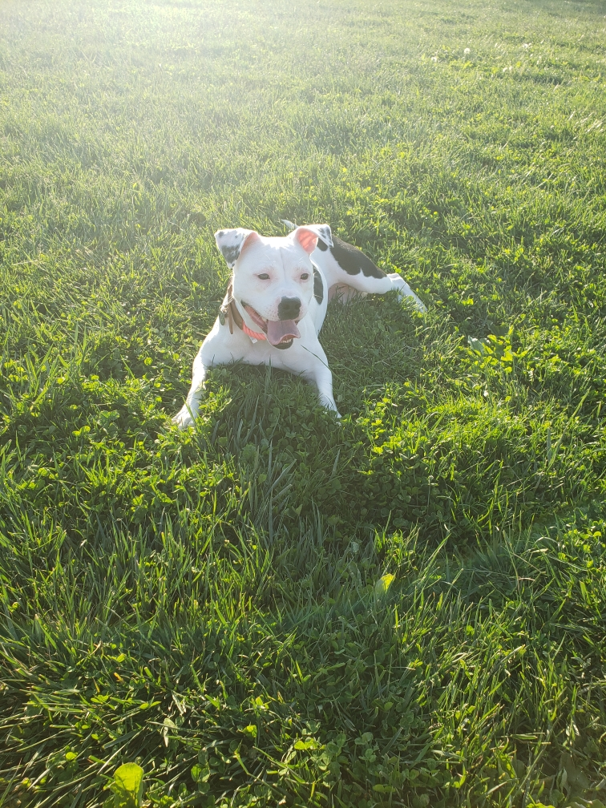

I currently reside in Columbus, Ohio, working as a UX/UI designer with a solid foundation in front-end development. I completed the UX/UI Certificate program at Ohio State University, engaging in both collaborative and individual projects.During the program, I enhanced my expertise in user research, empathetic skills, and visual design. This background equips me to effectively identify user challenges. I have always possessed a keen sense of observation and am a critical thinker, this enables me to pinpoint issues for both business and users. Through my training and practice, I've developed the capacity to contribute innovative solutions and see them through to implementation.

I currently live in Columbus, Ohio, and have a deep passion for marine life and wildlife in general. During my leisure hours, I explore different places and cherish moments with my family. Cruises have become a particular fascination for us. My other hobbies include playing basketball, video games, and reading. While I enjoy spending time hiking and immersing myself in nature, I also find pleasure in unwinding through gaming or watching shows with friends.